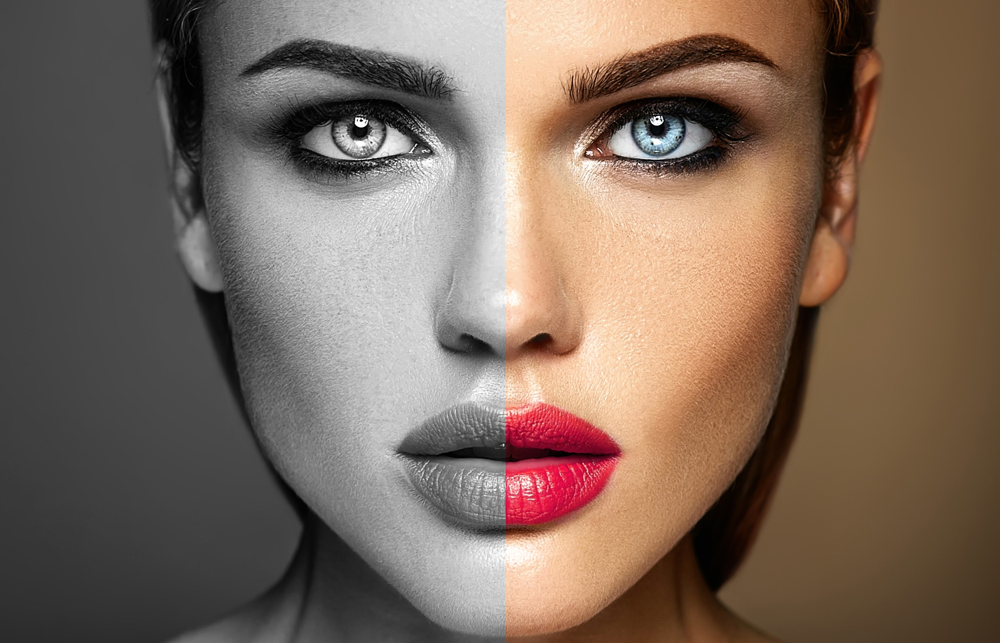

Intro

My approach to style is simple: I'm all about using the right products in the right places to
highlight person's best features and natural beauty."
I have over 20 years experience in the world of makeup and beauty and am passionate about making each
and every client feel fabulous in their own skin. My true passion is makeup but over the years I
have added numerous beauty treatments to my skill set which I feel further enhances my offering to
all my clients.
Work

PROFESSIONAL SUMMARY
I am a highly motivated, artistic and driven hair and makeup artist as well as a novice stylist. My
passion is taking my three loves and creating great style. I love to make people feel great about
themselves and highlighting their features. It is my privilege to play that role with all future
clients.
SKILLS
Airbrush makeup technique
Ability to conceptualizes various looks
Mens grooming
Multi-tasker
HD makeup
Efficient
Styles in many genres
Creative
Precision styling and cutting
Extensions
Accomplished Colorist including corrective coloring
Reliable
WORK HISTORY
Senior Elevated Educator, Stylist, Makeup Artist (10/2015- Present)
Moroccanoil Inc.
As an educator for Moroccanoil I teach other stylist various techniques, tips and tricks based on
the
technical class they are attending. While utilizing Moroccanoil products to achieve their end goals.
These field education classes can range from Art of bridal, Knotwork (braiding), Signature cutting
and
product knowledge, just to name a few. While also playing an instrumental role in all Moroccanoil
events
and trade shows. With the ability to assist at New York fashion week and Bridal Fashion week.
Hair Stylist, Makeup Artist, Stylist (09/2012 to 12/2016)
Oakley Inc. Foothill Ranch, CA
I contract with Oakley, Inc. as a freelance hair stylist, makeup artist and stylist. I work closely
with
their athletes styling them for various photo shoots, video shoots and press events. Often working
long
hours and on a changing time table; always producing great results. I often travel with Oakley staff
and
their athletes maintaining a working relationship with a friendly ease.
Senior Hair Stylist and Makeup Artist (08/2006 to Present)
Shampoo Cocktails Beauty Lounge Aliso Viejo, CA
Freelance Hair stylist, Makeup artist and Stylist (06/2006 to Present)
Self Employed On location
My passion is the ever revolving door that my freelance opportunities bring me. I freelance as a
hairstylist, makeup artist and stylist. I work well with everyone I come into contact with. I have a
lot
of experience collaborating with models, photographers and videographers to make their visions come
to
life. Whether that is in studio or on location. I thrive on the diversity of working in different
industries; wether it's television, fashion, film, editorial, sports, fitness, or lifestyle. I am
extremely hard working and take pride in all my work.
Some companies I've had the pleasure of working with are Tillys, Oakley, Locale Magazine, 5280
Magazine,
Chalene Johnson - ChaLEAN Extreme Work Out Beach Body Fitness, just to name a few.
EDUCATION
Cosmetology
Paul Mitchell The School - Costa Mesa, CA (2006)
CERTIFICATIONS
Paul Mitchell
Hairlocs Extension
Bellami Hair Extension
Kett Cosmetic Airbrush
Schwarzkopf Professional
Keratin Smoothing by Coppola
About
I have been a professional makeup artist for 20 years. I adore looking after my clients for their
wedding day and special occasions. My clients would usually describe me as calm, professional and
passionate about what I do.
I initially began my creative journey training in interior design but with both my parents having a
background in the cosmetic industry I suppose it was inevitable I had a natural interest and flare
for makeup. I have worked with Mac Cosmetics as an artist, a store manager and a regional trainer
throughout my 15 years with the brand.
During that time I have had the privilege of working on so many faces while working on the store
counters and traveling to fashion capitals to support International Fashion Weeks in London and
Milan.
Contact